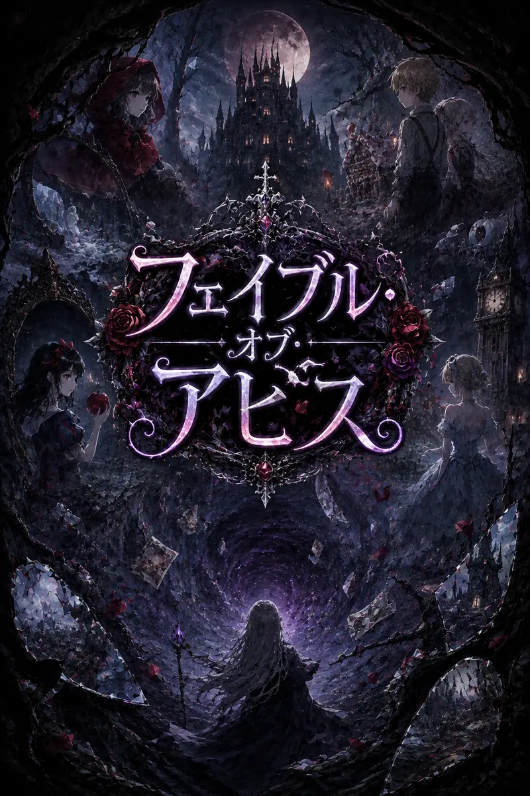

HOW TO PLAY
遊び方と、この物語について
『フェイブル・オブ・アビス』は、ブラウザで遊べる縦スクロールの弾幕シューティングです。インストールもアカウント登録も不要で、開いてすぐ始められます。全五話、通しで15分ほど。ここでは操作から仕組み、各話の相手までをまとめています。

Ⅰ奈落と、五つの寓話
ある日、世界のあちこちに漆黒の裂け目が開いた。人はそれを奈落と呼んだ。奈落は大地を侵し、街を飲み、静かに世界を蝕んでいく。原因も目的も分からない。分かっているのは、足を踏み入れた者が誰ひとり戻ってこないということだけ。
やがて、ひとつの噂が囁かれるようになる。——奈落では、童話の少女たちが現れる。
あなたが操るのは、その噂を確かめに降りていく挑戦者です。待っているのは、誰にも救われなかった少女たち。それぞれの物語を最後まで演じようとしています。全五話、通しで15分ほどの物語です。
Ⅱ操作
キーボードでも指でも遊べます。どちらの場合も、攻撃は押しっぱなしで構いません。
| 移動MOVE | ←↑↓→ ／ スマホは画面を指でなぞる（自動で攻撃します） |
|---|---|
| 攻撃SHOOT | ZSpace を押しっぱなし |
| 集中FOCUS | Shift 移動が遅くなり、自機の当たり判定が見えるようになります |
| ボムSPELL | XC ／ スマホは画面右下の「術」 |
| 中断PAUSE | PEsc 中断画面では音の切り替えもできます |
| 消音MUTE | M ／ PC は画面脇の「音 ON / OFF」 |
| 決定ENTER | Enter 選択画面で主要なボタンを押します |
Ⅲ画面の見方
PC では、盤面の右にステージ記号・体力・攻撃・速度・得点などが並びます。スマホでは盤面が画面いっぱいに広がるため、同じ情報は盤面の中に最小限だけ描かれます。
- 上部の横線 ボスの体力です。線が何本残っているかが、残りのゲージの数を表します。
- 技名 ゲージが変わるたびに、そのゲージの弾幕の名前が出ます。
- 左下の星 残っているボムの数です。
- 赤い点 自機の当たり判定。Shift の集中中に見えます。
Ⅳ生き延びるための規則
- 当たり判定は点だけ 自機の絵ぜんぶではなく、中心の赤い点にだけ弾が当たります。見た目より、ずっと細い隙間を抜けられます。
- 被弾すると体力が1減る 直後に短い無敵時間が入ります。0 になると力尽きます。
- 掠り 弾のすれすれを通ると得点が入ります。慣れてきたらハイスコアを目指しましょう。
- ゲージ ボスの弾幕はゲージごとに変わります。体力を削り切ると次のゲージへ進みます。一応それぞれに制限時間もありますが、避け続けるより撃ち落としたほうが速く、得点も高くなります。
- やり直し 力尽きても、その話の頭から書き直せます。ただし得点は 0 に戻ります。
Ⅴステータスの振り分け
開始時に 10 ポイントを、体力・攻撃・速度へ好きな配分で割り振ります。ボスを倒すたびに合計 3 ポイントが追加され、体力は全回復します。
| 体力VITALITY | 耐えられる被弾の回数が増えます。まず一周したい人向け。 |
|---|---|
| 攻撃POWER | ゲージを早く割れます。撃ち落とすほど得点が伸びるので、点を狙うならここ。 |
| 速度AGILITY | 移動が速くなります。避けに自信があるほど効きますが、上げすぎると細かい調整が難しくなります。 |
迷ったら、初回は体力に厚く振ってください。五つの話を最後まで読み通すことが、いちばんの近道です。
Ⅵ武装
三つのうち一つを選びます。一度選ぶと最後まで変えられません。Shift の集中中は、どれも性質が少し変わります。
| レーザーPOWER ★★★ | 真上へ伸びる貫通光。当たるのは自機の真上だけなので、ボスの真下へ潜り込む度胸が要ります。集中でさらに細く鋭くなります。 |
|---|---|
| 拡散弾POWER ★★☆ | 5 方向へ広がる散弾。道中の掃除が速い。集中すると束ねて一点へ集まり、密着すれば火力は最大になります。 |
| 追尾弾POWER ★☆☆ | 狙わなくても必ず届く誘導弾。威力は最も低いぶん、ずっと回避に専念できます。 |
Ⅶボム
窮地を一度だけ書き換える術です。五つから一つを選び、こちらも最後まで変えられません。所持数は難易度で決まり、話が変わるたび満タンに戻ります。
| グリムリープGRIM LEAP / 3秒 | 現在地に影武者を残し、三秒のあいだ無敵で疾走します。敵の狙撃は影武者へ逸れ、走り抜けた軌跡が弾を焼き払い続けます。時間切れの瞬間、自分と影武者の両方を中心に大爆発。 |
|---|---|
| タイムストップTIME STOP / 5秒 | 五秒間、敵と自分の弾幕をまとめて止めます。止まった弾には当たりません。自分の弾も止まりますが、解除の瞬間に溜まった分が一斉に走り出します。 |
| エクスカリバーEXCALIBUR / 1秒 | 一秒だけ真上へ極太の光を放ちます。触れた弾幕は残らず消え、貫かれ続けたものは深く抉られます。ボムの中で最も火力が高い一手。 |
| ホロウエクリプスHOLLOW ECLIPSE / 3秒 | 三秒間、相手の弾幕を湧いた端から消し続けます。攻撃力はありませんが、どんな弾幕でも三秒だけは無かったことにできます。 |
| ライトニングリパルサーLIGHTNING REPULSOR / 3秒 | 三秒間、高速で動けるようになり、掠り範囲に入った弾を相手へ撃ち返します。濃い弾幕に踏み込むほど返る火力が伸びる、上級者向け。 |
Ⅷ難易度
開始時に選び、途中では変えられません。弾の速さ、敵の頑丈さ、そしてボムの数が変わります。
| ノーマルNORMAL / ボム3 | 弾は遅く、ボスの体力も少なめ。まずは五つの寓話を最後まで読み通すための難易度です。 |
|---|---|
| ハードHARD / ボム2 | 避ける腕と、振り分けの設計と、ボムを切る度胸が同時に要ります。 |
| エクストラEXTRA / ボム1 | 弾速も体力も増し、ボスはどのゲージにも追撃を重ねてきます。ボムは一つきり。現在調整中のため非推奨です。もしクリアできた方がいれば報告をお願いします。 |
Ⅸ五つの話
物語の筋には触れずに、舞台と相手だけを並べておきます。それぞれのボスは四つ前後のゲージを持ち、ゲージごとに違う弾幕を張ります。
| 第一話 黒い森STAGE 1 | 赤ずきん 黒い森の少女。物語を最後まで演じ切ろうとしています。 |
|---|---|
| 第二話 お菓子の家STAGE 2 | ヘンゼルとグレーテル 飢えた兄妹。二人が同時に相手になります。 |
| 第三話 鏡の城STAGE 3 | 白雪姫 硝子の棺の中から。 |
| 第四話 灰かぶりの城STAGE 4 | シンデレラ 灰かぶりの城の主。魔法で組んだ巨大な盾を持っています。 |
| 第五話 奈落の館STAGE 5 | 奈落の最奥。誰が待っているのかは、辿り着いて確かめてください。 |
Ⅹ進めないときに
- まず集中を使う Shift を押している間だけ当たり判定が見えます。自分がどれくらい細いかを一度確かめておくと、避け方が変わります。
- 弾の隙間ではなく、隙間の行き先を見る いま空いている場所ではなく、一秒後に空く場所へ向かって動きます。
- ボムは温存しない 話が変わるたび満タンに戻ります。抱えたまま力尽きるのがいちばんもったいない使い方です。
- ボムを変えてみる 五つのボムは性格がまるで違います。弾を消して仕切り直すもの、時間を止めるもの、無敵で走り抜けるもの、火力を出すもの、踏み込んで撃ち返すもの。いま使っているものが噛み合わないと感じたら、次の挑戦では別のものを選んでみてください。同じ弾幕がまるで違って見えることがあります。
- 避けきれないなら体力へ 速度を上げれば避けられるようになる、とは限りません。動きが大きくなるぶん細かい調整が効かず、かえって弾へ寄ってしまうこともあります。避けきれないと感じたら、速度ではなく体力に多めに振ってください。被弾できる回数がそのまま増えるので、先へ進む手段としてはいちばん確実です。
- 攻撃に振ってみる 避け続けるより、削り切って次へ進むほうが結果的に安全です。弾幕は長引くほど事故が増えるので、行き詰まったら攻撃へ多めに振ってみてください。制限時間まで耐えてもゲージは割れますが、あくまで最後の保険くらいに考えてください。
- 難易度を下げるのは負けではない ノーマルは弾が遅く、ボムも三つあります。物語を読み通してから、ハードで挑み直すのが気持ちよく遊べる順番です。
Ⅺ音と動作環境
場面ごとに曲が変わります。音を消したいときは、PC なら画面脇の「音 ON / OFF」か M、スマホなら P にあたる中断画面から切り替えられます。
スマホでは、ブラウザの決まりにより、最初に画面を一度タップするまで音が鳴りません。タイトル画面のボタンに触れた時点で鳴りはじめます。端末側の消音スイッチが入っている場合も音は出ません。
Chrome、Safari、Firefox、Edge の最新版で動作を確認しています。セーブ機能はありません。ページを閉じると進行は失われます。